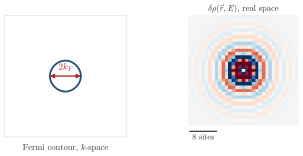
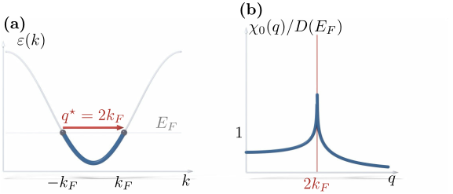
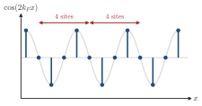

Advanced Quantum Materials 2027 · All lectures · Lecture notes
Session 9. Excitations and Defects in Quantum Materials
9.6a Impurities as diagnostics I, Friedel oscillations in a metal
We now go to the most physical realization of a perturbation, which is a real local impurity. Four case studies follow, one for each broad class of ground state that we have built in the course. These are metals, superconductors, topological matter and quantum magnets. In each case the diagnostic logic is the same. We perturb the system locally, and we obtain the nature of the ground state from how the effect of the perturbation decays in space.
Let us start with a metal. An impurity is a local shift of the onsite energy. If we add one to a Hamiltonian with translational symmetry, this symmetry is necessarily broken. Note, however, that perturbation theory itself never needed translational symmetry, since equations (9.2) and (9.3) are valid for any \(H_0\) and any \(V\). If we apply them directly to the local density of states, we obtain a response that is proportional to matrix elements between states at the Fermi surface. For a generic band, close to a parabolic one, the oscillation that results is set only by the Fermi wavevector.
To see this in an exact way, note that the static Lindhard function of a one-dimensional free-electron gas has the closed form
\[\chi_0(q) = \frac{m}{\pi\hbar^2 q}\ln\left|\frac{2k_F + q}{2k_F - q}\right|,\]
which is smooth everywhere except for a logarithmic non-analyticity exactly at \(q = 2k_F\). This is the same nesting singularity that we found in Section 9.4. A standard result of Fourier analysis is that a non-analyticity of a function \(\chi_0(q)\) at a wavevector \(q^\star\) gives an oscillating tail with an algebraic decay in its real-space Fourier transform. The period of this tail is fixed by \(q^\star\), and its envelope is set by the type of the singularity. We apply this to the change of density induced by the impurity, \(\delta n(x) = \int \frac{dq}{2\pi}\, e^{iqx}\, \chi_0(q)\, v_0\), in the Born approximation with impurity strength \(v_0\), and we obtain the Friedel oscillation,
\[\delta n(x) \;\xrightarrow{|x|\to\infty}\; A(v_0)\, \frac{\cos\!\big(2k_F |x| + \varphi_0\big)}{|x|^{\,d}} \qquad (d = 1,2,3), \tag{9.9}\]
The oscillation has a universal wavevector that is fixed only by the Fermi surface, which is \(2k_F\) in 1D, or more generally the diameter of the Fermi surface. It has an algebraic envelope, whose power depends on the dimensionality \(d\), and it has an amplitude and a phase that are not universal and are set by the impurity strength and by microscopic details. This closes the argument that we started in Section 9.4. The same singularity at \(q=2k_F\) in \(\chi_0(q)\), which we found there as an instability channel, gives here a long-ranged real-space oscillation with a power-law decay, and not a real instability. The reason is that a single local impurity is a perturbation that is much too weak to reorganize the whole Fermi sea. The divergence in \(\chi_0(q)\) only makes its Fourier partner decay slowly instead of exponentially. The two-dimensional case is drawn in Schematic 9.8.


A chain has the Fermi wavevector \(k_F=\pi/4\). What is the period of the Friedel oscillation of the density around an impurity, in units of the lattice constant?
Show the answers
- A. ✗ False
This is false. The Fermi wavelength is \(2\pi/k_F=8\), but the density oscillates as \(\cos(2k_Fx)\). The period of this function is \(4\), so \(8\) is the period of the wavefunction.
- B. ✓ True
This is true. The singularity of \(\chi_0\) is at \(q=2k_F=\pi/2\), so the density goes as \(\cos(\pi x/2)\). This repeats every \(4\) lattice constants.

The function \(\cos(2k_Fx)\) for \(k_F=\pi/4\) on the sites of the chain. The pattern \(1,0,-1,0\) repeats after \(4\) sites. - C. ✗ False
This is false. A period of \(2\) means \(2k_F=\pi\), which is half filling with \(k_F=\pi/2\). For \(k_F=\pi/4\) the oscillation is twice slower.
In two dimensions, \(d=2\) in (9.9). We compare the envelope of the oscillation at the distance \(x\) and at \(2x\). By which factor does it decrease?
Show the answers
- A. ✗ False
This is false. A factor \(2\) is the decay \(1/|x|\) of \(d=1\). In \(d=2\) the envelope falls as \(1/|x|^2\), so doubling \(x\) gives \(1/4\).
- B. ✓ True
This is true. With \(d=2\) the envelope is \(1/|x|^2\). At \(x\) and \(2x\) the ratio is \(2^2=4\), and it is a power law because the Fermi surface makes \(\chi_0\) non-analytic.
- C. ✗ False
This is false. A factor \(8\) is the decay \(1/|x|^3\) of \(d=3\). In \(d=2\) the exponent is two, so the decrease is \(2^2=4\).
Try it. Run the cell with mu = 3.8, where the Fermi circle is small, and measure the distance between two ripples of the LDOS. Then set mu = 3.0 and run it again. The Fermi circle is larger, and the ripples become shorter, from about 7 sites to about 3 sites, since the wavelength is \(\pi/k_F\).
To see this in a concrete case, we now take a chain, a plane and an insulator.